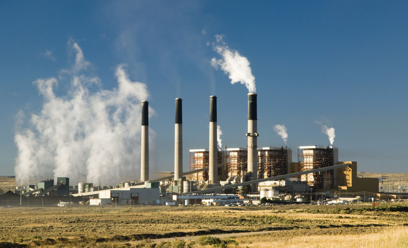
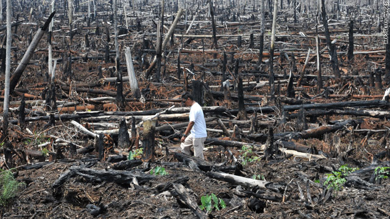

It's easy to feel overwhelmed, but we already have the answers, it’s just a question of making them happen:
Fossil Fuels
They need to be quickly replaced with cleaner, renewable energy like wind and solar power. Governments and companies need to further invest in low carbon transport solutions.
Agriculture
We need to stop destroying forests for intensive agriculture such as cattle farming and palm oil plantations, allowing the trees to regrow and planting hundreds of millions more. And creating ocean sanctuaries will provide protected areas in which sea life can flourish away from the threats of industrial fishing, helping to restore the oceans’ natural balance.
